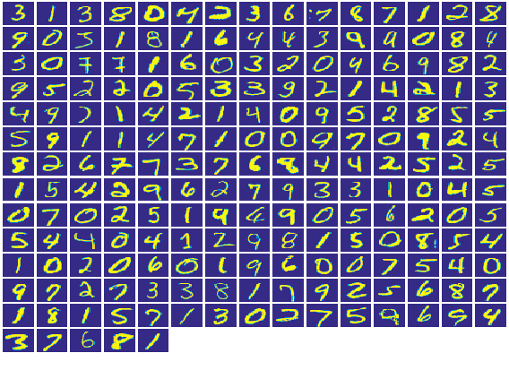
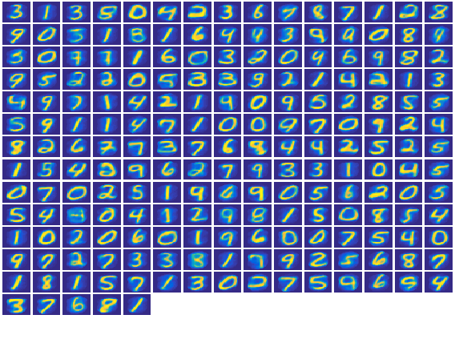
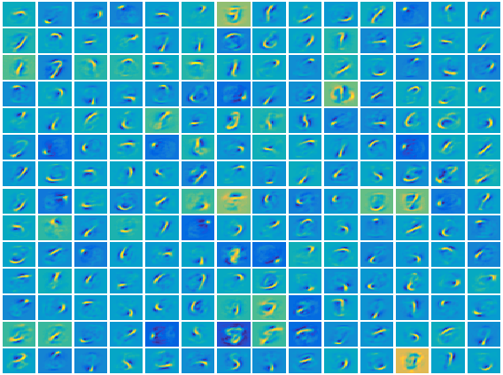

Contents
loadMNISTDataset
imsize = sqrt(size(Xtrain,2));
Xtrain = Xtrain(1:10000,:);
inds = randi(size(Xtrain,1),200,1);
plotSquareImages(Xtrain(inds,:));
Decompressing MNIST files...Done.
Loading MNIST files into Workspace...Ready to train model

Usage of sparse Autoencoder model
options_sae = [];
options_sae.nHidden = [196];
options_sae.sparsify = [1];
options_sae.betas = [3];
options_sae.rhos = [0.1];
options_sae.lambda = 3e-3;
model_sae = ml_unsupervised_sparseAutoencoder(Xtrain, options_sae);
Reconstruct original data using model
Xrecon = model_sae.predict(model_sae, Xtrain);
plotSquareImages(Xrecon(inds,:))
hiddenSize = model_sae.nHidden(1);
visibleSize = imsize.^2;

Visualize weights of final layer
W1 = reshape(model_sae.w(1:hiddenSize*visibleSize), visibleSize, hiddenSize);
plotSquareImages(W1');
